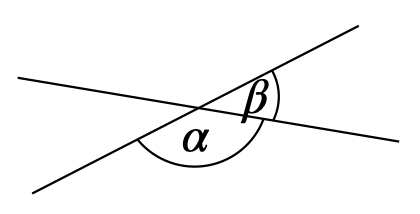

8 Zusammenhänge und Verfahren
Ziele
- Sie kennen prinzipielle Möglichkeiten, Zusammenhänge und Verfahren einzuführen, Aneignungsprozesse mithilfe von Orientierungshilfen zu gestalten und die Inhalte zu festigen.
- Sie erkennen Gemeinsamkeiten und Unterschiede in den typischen Vorgehensweisen für Begriffe, Zusammenhänge und Verfahren.
Material
8.1 Zusammenhänge erarbeiten
Bei Zusammenhängen (also Regeln, Gesetzen und Sätzen) bietet es sich an, in der Erarbeitung zwischen dem Finden des Zusammenhangs, dem Finden einer Begründung und der Darstellung der Begründung zu unterscheiden.27 Im schulischen Kontext erfüllt eine Begründung i. d. R. nicht nur die Funktion, den Wahrheitsgehalt des Sachverhaltes zu sichern (diese Funktion hat ein Beweis v. a. in der Fachmathematik), sondern über die Begründung den Sachverhalt besser zu verstehen, dessen innere Struktur nachzuvollziehen und mithilfe der Begründung über den Sachverhalt zu kommunizieren.
8.1.1 Zusammenhänge finden
Für das Finden neuer Zusammenhänge bestehen folgende Möglichkeiten (vgl. Vollrath & Roth, 2012, 247 f.):
Der neue Zusammenhang wird induktiv über das Entdecken von Merkmalen in gegebenen Situationen erarbeitet.
Werden bspw. Rechtecke und ihre Diagonalen gezeichnet, kann daraus entdeckt werden, dass sich die Diagonalen stets halbieren, dies also ein gültiger Zusammenhang zu sein scheint.
Der neue Zusammenhang entsteht aus dem Widerspruch zu einer angenommenen Hypothese.
Aus dem Recheckbeispiel könnte angenommen werden, dass Vierecke mit sich halbierenden Diagonalen immer Rechtecke sind. Über ein Gegenbeispiel kann aber gezeigt werden, dass dies auch bei Parallelogrammen der Fall ist. So wurde ein neuer Zusammenhang entdeckt.
Der neue Zusammenhang wird deduktiv aus bisherigen Zusammenhängen gefolgert.
Der Kosinussatz kann über die Zerteilung eines allgemeinen Dreiecks in rechtwinklige Dreiecke und die mehrfache Anwendung des Satzes des Pythagoras gefolgert werden.
Nicht immer ist es sinnvoll, einen Zusammenhang zu finden. So kann etwa die Lösungsformel \(x_{1,2} = -\frac{p}{2}\pm \sqrt{\left(\frac{p}{2}\right)^2-q}\) schlecht vermutet werden, um damit die Gleichung \(0 = x^2+px+q\) zu lösen. In dem Fall wird üblicherweise mithilfe einer Herleitung direkt zur Begründung des Zusammenhangs übergegangen. Ein solches Vorgehen ist i. d. R. deduktiv.
8.1.2 Begründungen finden
Da das Finden von Begründungen als Problemlöseprozess aufgefasst werden kann, ist es notwendig, auf Heurismen28 Bezug zu nehmen, um Begründungen für Zusammenhänge zu finden (vgl. Steinhöfel et al., 1988, 67 ff.).
- Dazu gehören heuristische Strategien, wie das Vorwärts- und Rückwärtsarbeiten, Rückführung von Unbekanntem auf Bekanntes oder Analogieschlüsse, die einzelne Beweisschritte leiten könnten.
- Heuristische Hilfsmittel wie informative Figuren können den Lösungsweg erleichtern. Gerade das Einzeichnen von Hilfslinien hat für geometrische Beweise eine hohe Bedeutung und sollte entsprechend erarbeitet werden.
- Über eine Zusammenstellung wichtiger Zusammenhänge und Definitionen stehen notwendige Beweismittel zur Verfügung, die dann auch auch Orientierungshilfen dienen können.
8.2 Zusammenhänge aneignen
Für die Aneignung eines neuen Zusammenhangs muss dieser an sich sowie seine Begründung angeeignet werden. Da beides eng miteinander zusammenhängt, sollte der Fokus daher auf der inneren Struktur des Zusammenhangs liegen. Mögliche Lernhandlungen hierfür sind:
- Prüfen der Voraussetzungen, um die Anwendbarkeit und Gültigkeit der Behauptung zu schließen. Dies erfolgt i. d. R. anhand einer (in einer Aufgabe) gegebenen Situation. Es reicht nicht aus, den Zusammenhang nur anzuwenden, sondern das Prüfen der ihm zugrundeliegenden Voraussetzungen ist ein wesentlicher Schritt in dessen Aneignung. Im Endeffekt entspricht dieses Prüfen einer Identifizierungshandlung.
- Angeben von Beispielen, auf die der Zusammenhang anwendbar ist. Dies kann auch als Realisierungshandlung aufgefasst werden.
- Herausarbeiten von Voraussetzung und Behauptung, um die Aussage des Zusammenhangs zu verinnerlichen und dessen logische Struktur zu betonen. Dies kann auch über eine sprachliche Umformulierung des Zusammenhangs (z. B. als Wenn-dann-Aussage) erfolgen.
Als Orientierungshilfen innerhalb der genannten Lernhandlungen und zur Darstellung der Begründung sind geeignet:
In strukturierten Wissensspeichern kann ein Zusammenhang oder eine Gruppe von Zusammenhängen so dargestellt werden, dass dessen/deren innere Struktur hervorgehoben wird. Hierzu bietet sich eine tabellarische Übersicht an, die neben dem Namen des Zusammenhangs auch dessen Voraussetzungen und Behauptungen sowie ggf. eine verallgemeinerte (ikonische oder symbolische) Darstellung des Zusammenhangs enthält.
Tab. 8.1: Strukturierter Wissensspeicher zu Winkelsätzen, angelehnt an Steinhöfel et al. (1988, S. 69) Name des Satzes Voraussetzung Skizze Behauptung Scheitelwinkelsatz \(\alpha\) und \(\beta\) sind ein Scheitelwinkelpaar. 
\(\alpha = \beta\) Nebenwinkelsatz \(\alpha\) und \(\beta\) sind ein Nebenwinkelpaar.  \(\alpha + \beta = 180°\) Stufenwinkelsatz \(\alpha\) und \(\beta\) sind Stufenwinkel an geschnittenen Parallelen. 
\(\alpha = \beta\) Wechselwinkelsatz \(\alpha\) und \(\beta\) sind Wechselwinkel an geschnittenen Parallelen. 
\(\alpha = \beta\) Ebenfalls der Betonung der inneren Struktur dienlich sind strukturbetonende Realisierungsmöglichkeiten. In diesen wird ein Zusammenhang dargestellt und die Darstellung dient gleichzeitig als »Ausfüllhilfe«. Solche Darstellungen mit Platzhaltern bieten sich insbesondere bei algebraischen Zusammenhängen an.
Die erste binomische Formel lässt sich in der Form \(({\large\bigcirc} + \boxed{\phantom{X}})^2 = {\large\bigcirc}^2 + 2\cdot {\large\bigcirc}\cdot \boxed{\phantom{X}} + \boxed{\phantom{X}}^2\) darstellen, wobei die Kreise und Boxen mit entsprechenden Werten oder Variablen gefüllt werden können.
Für das Finden einer Begründung kann folgende Handlungsvorschrift als Orientierungshilfe dienen (angelehnt an Steinhöfel et al., 1988, S. 72):
- Formulieren des Zusammenhangs als Wenn-dann-Aussage
- Feststellen von Voraussetzung und Behauptung
- Erstellen einer Überlegungsfigur, Bezeichnung wichtiger Teile sowie der Voraussetzung und Behauptung
- Überlegung, woraus die Behauptung folgen kann. Dabei Verwendung der Überlegungsfigur sowie Orientierung an
- Definitionen vorkommender Begriffe
- Sätzen mit gleicher Behauptung
- Sätzen mit ähnlicher Behauptung
- Abwägung, welcher Satz bzw. welche Definition geeignet ist
- Nachweis der Behauptung aus den bei 5. gewählten Beweismitteln
Für die Darstellung einer Begründung kann ein Beweisschema Orientierung bieten. So können bspw. Beweise in einer Tabelle dargestellt werden, bestehend aus einer Spalte zum Beweisschritt und einer zur zugehörigen Begründung. Dies ist insbesondere für direkte Beweise geeignet, bei denen von der Voraussetzung zur Behauptung geschlossen wird.
8.3 Zusammenhänge festigen
Zum Festigen von Zusammenhängen eignet sich nach Steinhöfel et al. (1988, S. 34) u. a. die Einschränkung einer oder mehrerer Voraussetzungen oder das Vertauschen von Voraussetzung und Behauptung, um die weitere Gültigkeit zu prüfen. Wie auch schon bei Begriffen sollten weiterhin Bezeichnungen variiert und alternative Formulierungen betrachtet werden. Auch bietet es sich an, Zusammenhänge mit gleicher oder ähnlicher Behauptung zu betrachten. Auch hier sei an die systematische Übersicht in Tabelle 8.2 verwiesen.
Nach Vollrath & Roth (2012, S. 49) ist ein Zusammenhang verstanden, wenn Schülerinnen und Schüler
- den Zusammenhang angemessen formulieren können,
- Beispiele für den Zusammenhang angeben können,
- wissen, unter welchen Voraussetzungen der Zusammenhang gilt,
- den Zusammenhang begründen können,
- Konsequenzen des Zusammenhangs kennen,
- Anwendungen des Zusammenhangs kennen.
8.4 Allgemeine Hinweise zu Verfahren
Verfahren dienen in der Mathematik der Verallgemeinerung einer Lösung von einem spezifischen Problem hin zu einer ganzen Klasse von Problemen. Für die ausführenden Schülerinnen und Schüler verschiebt sich damit der (idealerweise) kreative Prozess bei der Behandlung von Begriffen und Zusammenhängen hin zu einem disziplinierten Arbeiten (vgl. Vollrath & Roth, 2012, 262 f.). Dabei darf das Verfahren jedoch nicht als geistig leeres Abarbeiten eines Lösungschemas verstanden werden, sondern auch die »Herkunft des Verfahrens« (z. B. Begründung einzelner Schritte) sind Bestandteil der Verfahrenskenntnisse.
Vollrath & Roth (2012, S. 261, Hervorhebungen im Original) zufolge beziehen sich Verfahren »in der Arithmetik in erster Linie auf die Rechenoperationen in den verschiedenen Zahlbereichen, auf das Lösen von Sachaufgaben für Größen mit Hilfe von Funktionen sowie auf die Bestimmung von Funktionswerten; in der Algebra betreffen sie das Lösen von Gleichungen, Gleichungssystemen und Ungleichungen; in der Geometrie geht es um das Konstruieren, das Berechnen von Umfängen, Flächeninhalten und Rauminhalten, das Darstellen von Körpern und in der Trigonometrie um die Dreiecksberechnungen.«
Dabei bauen Verfahren auf Begriffe und Zusammenhänge auf – benötigen i. d. R. sogar mehrere von ihnen. Diese müssen also sicher zur Verfügung stehen. Oftmals ist eine Hierarchie von Begriffen und Zusammenhängen bzw. vorheriger Verfahren nötig, um neue Verfahren aufzubauen (z. B. baut die schriftliche Multiplikation u. a. auf die schriftliche Addition und das kleine Einmaleins im Kopf auf, vgl. Vollrath & Roth, 2012, S. 262). Die Behandlung von Verfahren dient damit gleichzeitig auch der vertiefenden Aneignung von Begriffen und Zusammenhängen.
8.5 Verfahren erarbeiten
Entsprechend ihrer Eigenschaft, dass Verfahren dem effektiven Lösen einer Klasse von Problemen dienlich sind, können Verfahren über eine reflektierende Betrachtung der Lösung spezifischer Probleme derselben Problemklasse erarbeitet werden. Geeignete Reflexionsfragen sind dabei:
- Was haben all die betrachteten Probleme gemeinsam?
- Welche Schritte haben wir jeweils durchgeführt, um das Problem zu lösen?
- Wozu haben wir die Schritte durchgeführt?
- Warum war es möglich, die Schritte durchzuführen?
Die letzten beiden Fragen beziehen sich auf das Ziel (»Wozu?«) und den Weg (»Warum?«) der jeweiligen Verfahrensschritte.29 Vollrath & Roth (2012, S. 264) stellen am Beispiel des Lösens der Gleichung \(5x = 10\) dar, dass eine Unterscheidung zwischen Ziel (»die \(5\) auf die andere Seite bekommen«) und Weg (durch \(5\) dividieren) bei der Verfahrensgewinnung hilfreich sein kann. Während das Ziel die Notwendigkeit des Schrittes begründet, nimmt der Weg Bezüge auf die im Hintergrund wirkenden Begriffe und Sachverhalte und liefert damit eine kausale Begründung für den Verfahrensschritt.
8.6 Verfahren aneignen
Die Aneignung eines Verfahrens erfolgt i. d. R. über dessen Anwendung. Im Sinne der etappenweisen Ausbildung bedeutet dies (Steinhöfel et al., 1988, S. 118):
- Auf der Etappe der materiellen/materialisierten Handlung liegt der Verfahrensablauf in schriftlicher Form vor.
- Auf der Etappe der sprachlichen Handlung liegt der Verfahrensablauf nicht mehr schriftlich vor. Die einzelnen Schritte werden von den Schülerinnen und Schülern während der Ausführung kommentiert.
- Auf der Etappe der geistigen Handlung führen die Schülerinnen und Schüler das Verfahren selbstständig und ohne schriftlich vorliegenden Verfahrensablauf aus.
Als Orientierungshilfe dient die schriftliche Fixierung des Verfahrensablaufs selbst – als Wortvorschrift, als Flussdiagramm bzw. als Graph o. Ä.
8.7 Verfahren festigen
Verfahren können u. a. gefestigt werden, indem einzelne im Verfahren auftretende Operanden spezialisiert werden (z. B. die beiden Summanden bei der schriftlichen Addition) – dies entspricht im Endeffekt einer Fallunterscheidung. Auch ist die Untersuchung unterschiedlicher Reihenfolgen der Verfahrensoperationen oder eine Variabilität der Darstellung des Verfahrens (z. B. Blockschema, Wortvorschrift, Graph, …) möglich. Weiterhin können Unter- bzw. Oberalgorithmen betrachtet, Umkehroperationen gebildet oder unterschiedliche Variablengrundbereiche untersucht werden (vgl. Steinhöfel et al., 1988, S. 34).
Nach Vollrath & Roth (2012, 49 f.) ist ein Verfahren verstanden, wenn Schülerinnen und Schüler
- wissen, was man damit erreicht,
- wissen, wie es geht,
- es auf Beispiele anwenden können,
- wissen, unter welchen Voraussetzungen es funktioniert,
- wissen, warum es funktioniert.
8.8 Zusammenfassung
Im letzten und diesem Kapitel hat sich gezeigt, dass die Behandlung von Begriffen, Zusammenhängen und Verfahren grundsätzliche Ähnlichkeiten aufweisen. So konnten stets die Teilprozesse einer Erarbeitung (Begriffe bilden, Zusammenhänge und ihre Begründungen finden, Verfahren gewinnen), einer Aneignung (unter Zuhilfenahme von Orientierungshilfen mit dem Ziel der etappenweie Ausbildung geistiger Handlungen) und einer Festigung identifiziert werden. Für letztere zeigt Tabelle 8.2 noch einmal eine Gegenüberstellung von Möglichkeiten.
| Begriffe | Zusammenhänge | Verfahren | |
|---|---|---|---|
| Verwendung von Spezial- und Extremfällen | Unterbegriffe; Grenzfälle |
Einschränkung einer oder mehrerer Voraussetzungen im Gültigkeitsbereich; Fallunterscheidungen |
Spezialisierung von Operanden (Fallunterscheidungen) |
| Umformulieren | verschiedene Definitionsarten;Definition in Merkmalssystem verwandeln | verschiedene logisch gleichwertige Formulierungen | evtl. unterschiedliche Reihenfolge der Operationen |
| Verwendung unterschiedlicher Bezeichnungen | Merkmale nicht an feste Variablensymbole binden | Voraussetzungen und Behauptungen nicht an feste Symbole binden | unterschiedliche Formalisierungen (Blockschema, Wortvorschrift, Graph, …) |
| Bekanntes Neuem gegenüberstellen und Zusammenhänge erkennen lassen | Oberbegriffe; Einordnung in Begriffssystem |
Sätze mit gleicher Behauptung; Sätze mit ähnlicher Behauptung |
Unteralgorithmen; Oberalgorithmen |
| Umkehrungen bilden | Voraussetzungen und Behauptungen vertauschen | Umkehroperationen bilden | |
| Bedingungen variieren | Merkmalsvariation durch Weglassen bzw. Hinzufügen von Merkmalen, Ändern der log. Verknüpfung | Weglassen bzw. Hinzufügen von Voraussetzungen | unterschiedliche Variablengrundbereiche |
Weiterführende Möglichkeiten zur Erarbeitung von Begriffen, Zusammenhängen und Verfahren stellen Vollrath & Roth (2012, 227 ff.) dar.
References
Spezifischer sprechen einige Quellen auch von der Satzfindung, Beweisfindung und Beweisdarstellung, z. B. Steinhöfel et al. (1988, S. 59)↩︎
Eine Übersicht über Heurismen bietet bspw. die Webseite https://proffi-m.de/theorie.↩︎
Vollrath & Roth (2012, S. 264) verweisen hier auf die umgangssprachliche Vermischung der beiden Fragen »Wozu?« und »Warum?«.↩︎